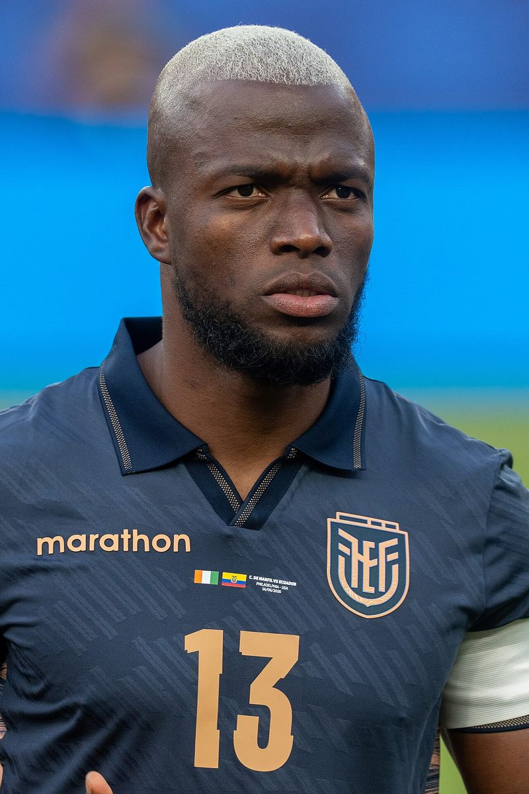

Этот день в 2022-м: Катар дал старт первому чемпионату мира на Ближнем Востоке
Дубль Эннера Валенсии в матче открытия положил начало 29-дневному зимнему турниру с рекордными 172 голами и третьим титулом Аргентины.

20 ноября 2022 года на 60-тысячной арене «Эль-Байт» в городе Эль-Хаур стартовал 22-й чемпионат мира по футболу. Главный турнир планеты впервые в истории пришел на Ближний Восток и Аравийский полуостров. В матче открытия сборная Эквадора со счетом 2:0 переиграла хозяев — сборную Катара. Победу южноамериканцам на глазах 67 372 зрителей принес нападающий Эннер Валенсия (Enner Valencia), оформивший дубль еще до перерыва: на 16-й минуте он хладнокровно реализовал пенальти, а на 31-й уложил мяч головой точно в нижний угол. В результате Катар стал первой страной-хозяйкой за всю 92-летнюю историю соревнований, уступившей в стартовом матче.
Зимний календарь и двенадцать лет критики
Право провести ЧМ-2022 Катар получил еще 2 декабря 2010 года в Цюрихе: исполком ФИФА в составе 22 человек отдал предпочтение ближневосточной заявке, опередившей проекты США, Южной Кореи, Японии и Австралии. Голосованию предшествовал громкий коррупционный скандал — двоих членов исполкома отстранили еще до начала процедуры, а группа технической оценки ФИФА и вовсе присвоила летней заявке Катара статус турнира с «высоким операционным риском».

Чтобы уберечь спортсменов и болельщиков от экстремальной катарской жары и высокой влажности, ФИФА пошла на беспрецедентный шаг, впервые сдвинув сроки мирового первенства на ноябрь и декабрь. Из-за этого национальным первенствам, включая все ведущие европейские лиги, пришлось приостановить сезон с конца ноября до конца декабря. Организаторы спрессовали 64 матча в предельно плотный 29-дневный график на восьми стадионах в пяти муниципалитетах страны: Эль-Хауре, Эр-Райяне, Эль-Вакре, Дохе и Лусаиле.
На протяжении всех 12 лет подготовки мундиаль оставался под огнем международной критики. Обсуждались обвинения в коррупции, ситуация с правами человека в Катаре, правовые запреты в отношении представителей ЛГБТ+, а также положение трудовых мигрантов. Именно экспаты и рабочие-мигранты составляли более трех миллионов человек из 3,18-миллионного населения страны во время масштабного строительного бума, в ходе которого на полуострове возвели семь новых стадионов, расширили метрополитен и проложили современные автомагистрали.
Прощание с форматом 32 сборных и технические новшества
Катарский турнир подвел черту под эпохой 32 участников, действовавшей с 1998 года — уже на ЧМ-2026 в Северной Америке число финалистов возрастет до 48. Общий призовой фонд турнира составил рекордные 440 миллионов долларов (на 40 миллионов больше, чем на ЧМ-2018 в России): каждая пробившаяся в финальную часть сборная гарантировала себе минимум 9 миллионов долларов призовых и еще 1,5 миллиона долларов на компенсацию расходов на подготовку.

ЧМ-2022 ознаменовался и важными изменениями в футбольных правилах. Впервые на мужских чемпионатах мира командам разрешили проводить пять замен в основное время и шестую — в экстра-таймах. Кроме того, дебютировал специальный протокол замен при подозрении на сотрясение мозга, не сгоравший из основного лимита. Первой этой опцией в истории мундиалей воспользовалась сборная Ирана: на следующий день после открытия турнира вратарь Алиреза Бейранванд (Alireza Beiranvand) получил травму головы в столкновении с партнером в матче с Англией, и его место в воротах занял Хоссейн Хоссейни (Hossein Hosseini).
Рекорд результативности и исторический финал
За 29 игровых дней 32 сборные забили совместными усилиями 172 мяча, побив рекорд результативности для турниров с 32 участниками, причем хотя бы один гол записала на свой счет каждая без исключения команда. Настоящей сенсацией стало выступление сборной Марокко — первой африканской и арабской команды, добравшейся до полуфинала, где ее поступь остановила Франция (0:2).
Точка в турнире была поставлена 18 декабря 2022 года — в Национальный день Катара — на арене «Лусаил», где в битве за золото сошлись Аргентина и действующие чемпионы мира французы. Выдав один из величайших матчей в истории с ничьей 3:3 по итогам 120 минут, «альбиселесте» вырвали победу в серии пенальти со счетом 4:2. Аргентина завоевала свой третий кубок мира и первый с 1986 года, прервав 20-летнюю гегемонию европейских сборных, длившуюся со времен триумфа Бразилии в 2002-м. Капитан аргентинцев Лионель Месси получил «Золотой мяч» лучшему игроку турнира, а француз Килиан Мбаппе стал обладателем «Золотой бутсы» с 8 голами, оформив первый хет-трик в финале мужского ЧМ со времен англичанина Джеффа Херста (Geoff Hurst) в 1966 году.